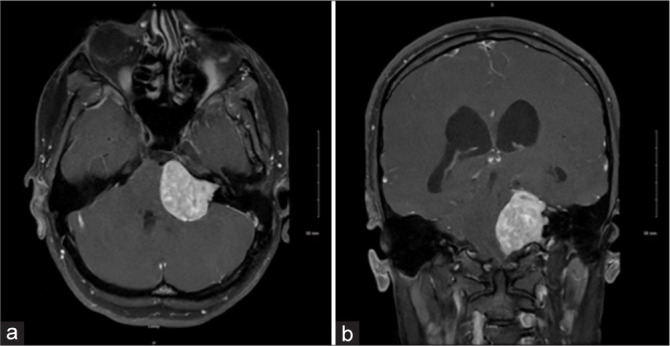
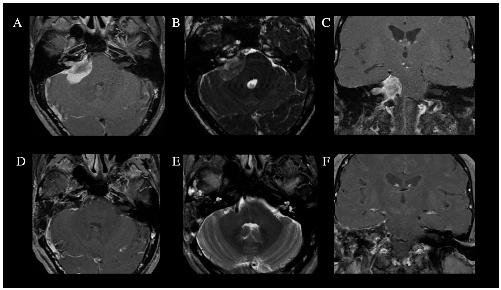
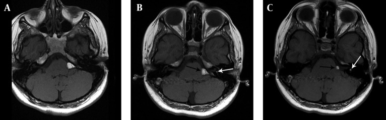
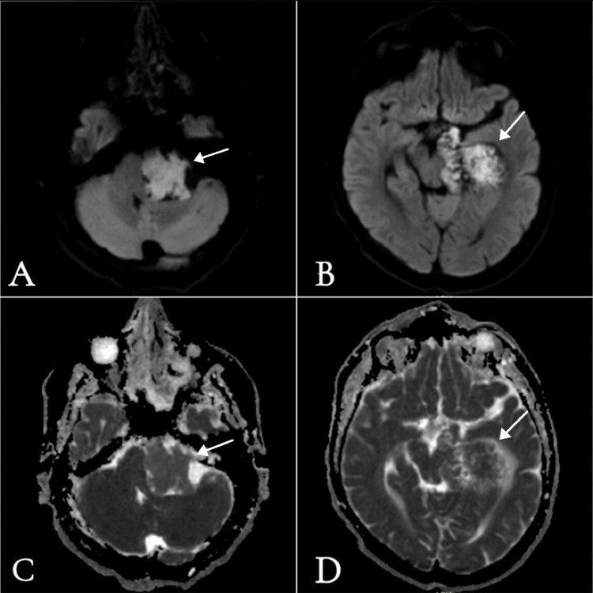

240 — Phân độ Hannover & chọn SRS hay mổ schwannoma tiền đình + khối CPA ít gặp / Hannover grading and SRS vs microsurgery for vestibular schwannoma and uncommon CPA masses
Tags: pattern:ngoai-truc-CPA vung:goc-cau-tieu-nao score:Hannover score:Koos protocol:MRI-CISS-DWI protocol:SRS
Mức chắc chắn (certainty): tổng hợp y văn (literature synthesis) — số liệu từ 4 nghiên cứu mở 2024–2026 (PMC13447026, PMC13380556, PMC13607616, PMC13124958) + ca minh họa; chưa có ca nguyên văn của nhóm.
1. Tổng quan — từ "khối CPA" đến "chọn đường điều trị"
- Bệnh học: schwannoma tiền đình (vestibular schwannoma, VS) xuất phát từ tế bào Schwann nhánh tiền đình dây VIII, thường ở vùng chuyển tiếp thần kinh đệm–Schwann (Obersteiner) trong ống tai trong → lớn dần ra góc cầu-tiểu não. VS chiếm 80–90% u CPA; tỷ lệ mới mắc 3–5,2/100.000 người-năm; tốc độ lớn trung bình 1–2 mm/năm (đa số chậm, một số không lớn).
- TẠI SAO hình ảnh quyết định: triệu chứng (điếc một bên, ù tai, chóng mặt) không tương quan kích thước; vị trí trong ống tai trong, mức chạm/chèn thân não, thể tích mới quyết định SRS hay mổ. Phân độ Hannover (Samii) và Koos là ngôn ngữ chung để so kết cục.
- TẠI SAO tín hiệu MRI như vậy: VS là mô đặc tế bào → T1 đồng/tối nhẹ so với nhu mô não, T2 sáng vừa, ngấm thuốc mạnh và đồng nhất (trừ thể nang/hoại tử); không hạn chế khuếch tán (DWI không sáng như epidermoid). Rộng ống tai trong + khối "kem ốc quế" (ice-cream cone) là dấu hiệu định vị.
- TẠI SAO SRS kiểm soát u: bức xạ gây tổn thương DNA tế bào Schwann → ngừng phân chia; thể tích không giảm ngay, thường phình nhẹ 1–3 mm trong 6–18 tháng đầu (pseudoprogression/TVE — tumor volume expansion) rồi teo dần. Vì vậy không đánh giá thất bại sớm bằng kích thước.
- Ngưỡng định lượng cốt lõi:
- Hannover T1 trong ống tai trong; T2 lan CPA ≤ 20 mm; T3 > 20 mm chạm thân não; T4 chèn ép thân não — T4a chèn ép không chèn não thất IV, T4b đẩy lệch thân não + chèn não thất IV (định nghĩa vận hành theo Shawarba 2026, dựa trên Hannover).
- Koos I trong ống tai; II–III vào CPA, chạm thân não; IV chèn/đẩy thân não.
- SRS chọn khi u < 30 mm (Koos I–III), liều biên 12–13 Gy; mổ khi ≥ 30 mm, chèn thân não có triệu chứng, thể nang lớn, hoặc u lớn gây não úng thủy.
2. Mẫu hình + chẩn đoán phân biệt theo khoang (gamut)
- Trung tâm ống tai trong (IAC): VS (phổ biến nhất, làm rộng ống), schwannoma dây VII, meningioma lan vào ống, lipoma trong ống.
- Bể CPA (cistern): epidermoid (thứ ba sau VS/meningioma, ~40% u epidermoid nội sọ nằm ở CPA), nang màng nhện, meningioma mặt sau xương đá, schwannoma dây V/IX–XI.
- CPA + xương: meningioma dày xương (hyperostosis), di căn xương đá, chondrosarcoma, cholesteatoma bẩm sinh.
- Mạch máu: phình/giả phình động mạch thân nền–động mạch tiểu não, AVM/dAVF màng cứng, động mạch lạc chỗ (vascular loop) chèn dây VII (co giật nửa mặt).
- Theo bối cảnh: NF2 → VS hai bên + schwannoma dây khác + meningioma (đừng dừng sau khi thấy u đầu tiên); trẻ em → schwannoma "phổ nhi" thường lớn, có thể liên quan NF2 (ca Koos IV dưới đây).
3. Bảng so sánh phân biệt (ma trận đối chiếu)
| Thực thể (entity) | Hình ảnh điển hình | Chốt vào (rule-in) | Chốt loại (rule-out) | Gợi ý xác nhận |
|---|---|---|---|---|
| Schwannoma tiền đình (VS) | Khối trung tâm ống tai trong, làm rộng ống, "kem ốc quế"; T1 đồng/tối, T2 sáng vừa, ngấm mạnh đồng nhất; thể lớn có nang | Rộng ống tai trong + khối từ ống lan ra + ngấm mạnh | Đuôi màng cứng rộng, dày xương, không rộng ống → meningioma | MRI T1CE lát mỏng ≤ 3 mm + CISS/FIESTA; theo dõi 6–12 tháng |
| Meningioma mặt sau xương đá | Bám màng cứng rộng, đuôi màng cứng, dày xương, vôi hóa; T2 đồng, ngấm đồng nhất; ống tai trong không rộng (nhưng có thể lan vào) | Đuôi màng cứng + dày xương + bờ rộng nền | Rộng ống tai + khối trong ống → VS | CT xương đá; MRI T1CE; không sinh thiết mù trước khi đánh giá mạch |
| Epidermoid CPA | Giống DNT trên T1/T2, bờ múi khế (festooned), bọc quanh dây thần kinh/mạch; DWI sáng, ADC thấp | DWI sáng + ADC thấp so với DNT (ADC epidermoid ~1,20–1,32 × 10⁻³ mm²/s) | ADC bằng DNT + không hạn chế → nang màng nhện | DWI + ADC; CT thấy mòn xương mỏng |
| Lipoma CPA | T1 rất sáng, mất tín hiệu khi fat-sat, không ngấm; CT −100 đến −182 HU | T1 sáng + tụt tín hiệu fat-sat + HU âm | T1 sáng không tụt fat-sat → máu/melanin/dermoid | CT không cản quang + MRI T1 fat-sat |
| Nang màng nhện | Giống DNT mọi chuỗi xung, không ngấm, DWI tối, đè xương mỏng | Theo DNT tuyệt đối + DWI không sáng + không ngấm | DWI sáng → epidermoid | MRI + CT; theo dõi nếu không chèn ép |
| Di căn/ phình mạch CPA | Di căn: phù não rộng, phá xương, ngấm không đều; phình: flow void, vôi hóa viền, đau/SAH | Phù não + phá xương (di căn); flow void + đau đột ngột (phình) | Bờ nhẵn, không phù, không flow void → u lành | CTA/MRA trước mọi can thiệp; PET/CT nếu nghi di căn |

Schwannoma tiền đình trái Koos IV (a: axial, b: coronal T1 sau tiêm): khối lớn ngấm thuốc, chèn ép thân não, làm mất góc cầu-tiểu não — đây là nhóm mổ là ưu tiên, không phải SRS đơn thuần. Nguồn: Garner R et al., Surg Neurol Int 2026, PMC13157902 Fig. 1, CC BY-NC-SA 4.0.
Meningioma mặt sau xương đá: (A–C) trước mổ — khối bám màng cứng, đuôi màng cứng dọc xương đá, lan vào ống tai trong; (D–F) sau mổ đường xuyên mê đạo. Khác VS: bờ rộng nền, không lấy ống tai trong làm tâm. Nguồn: Erginoglu U et al., Cancers (Basel) 2026, PMC13564978 Fig. 2, CC BY 4.0.4. Protocol chụp + phân độ + quyết định SRS hay mổ
Protocol MRI (1,5–3 T):
- T1 sau tiêm lát mỏng ≤ 3 mm (khảo sát ống tai trong + toàn u), T2 3D nặng T2 (CISS/FIESTA/DRIVE) để thấy dây VII–VIII, mạch, khe DNT; DWI + ADC bắt buộc khi nghi epidermoid/nang; FLAIR để loại nang màng nhện; CT xương đá khi nghi meningioma/dày xương/ phình vôi hóa.
- Đo: đường kính lớn nhất mm (phần ngoài ống), thể tích cm³ (công thức ellipsoid) — vì thể tích dự báo kiểm soát tốt hơn đường kính; ghi vị trí so với thân não và não thất IV.
Phân độ Hannover (Samii) — dùng để chọn đường:
| Hannover | Định nghĩa | Thái độ |
|---|---|---|
| T1 | Hoàn toàn trong ống tai trong | Theo dõi / SRS nếu tiến triển |
| T2 | Lan CPA ≤ 20 mm, chưa chạm thân não | SRS hoặc theo dõi |
| T3 | > 20 mm, chạm thân não, chưa chèn ép | SRS nếu < 30 mm; mổ nếu lớn/nang |
| T4a | Chèn ép thân não, không chèn não thất IV | Mổ (hoặc SRS chọn lọc nếu < 30 mm) |
| T4b | Đẩy lệch thân não + chèn não thất IV | Mổ; đánh giá não úng thủy trước |
Kết cục SRS (160 bệnh nhân, liều biên 12–13 Gy, theo dõi trung vị 96 tháng):
| Nhóm | Kiểm soát u | PFS 10 năm | Giữ thính lực 5 năm (GR I–II) | Liệt dây V mới | Não úng thủy cần shunt |
|---|---|---|---|---|---|
| Koos I (n=20) | 100% | 100% | 91,7% | 0% | 0% |
| Koos II–III (n=107) | 98,9% | 97,4% | 36,0% | 0,9% | 5,6% |
| Koos IV (n=33) | 96,6% | 96,6% | 53,6% | 6,1% | 27,3% |
- SRS: kiểm soát tổng 98,1%; TVE (phình giả) 45,0% / 95,3% / 75,8% theo Koos I / II–III / IV → không chụp lại quá sớm để "bắt" thất bại; lịch 3–6–12 tháng, sau đó hằng năm; liều biên 12–13 Gy, hạn chế liều ốc tai/thân não.
- Mổ (Koos IV, 139 bệnh nhân, đường sau xoang sigma): đường kính ngoài ống trung bình 33,6 ± 6,1 mm; GTR 73,5%, bán phần 25,0%, một phần 1,5%; dây VII tốt (HB I–II) cuối theo dõi 58,7% (ngay sau mổ chỉ 36,0% — nhiều ca hồi phục); rò DNT 4,3%, liệt dây VI 2,9%; thính lực: điếc hoàn toàn tăng từ 13,0% lên 57,3%.
- Chọn đường mổ: sau xoang sigma (giữ thính lực, u mặt sau ống tai), xuyên mê đạo (thính lực không dùng được, u lan vào ống), hố sọ giữa (u nhỏ trong ống, giữ thính lực); giám sát EMG dây VII + ABR trong mổ.
flowchart TD
A[Khoi CPA tren MRI] --> B{Trung tam ong tai trong + rong ong?}
B -->|Co| C[Schwannoma tien dinh]
B -->|Khong| D{DWI sang + ADC thap?}
D -->|Co| E[Epidermoid: mo lay toi da - DWI theo doi sot vo]
D -->|Khong| F{T1 rat sang + tut tin hieu fat-sat?}
F -->|Co| G[Lipoma: theo doi - khong mo neu khong trieu chung]
F -->|Khong| H[Meningioma hoac khac: CT xuong + CTA]
C --> I{Kich thuoc va than nao}
I -->|< 30 mm - Koos I-III| J[SRS 12-13 Gy]
I -->|>= 30 mm hoac chen than nao - Koos IV| K[Mo: sau xoang sigma / xuyen me dao]
J --> L[MRI 3-6-12 thang: TVE la binh thuong]
K --> M[MRI 3 thang: GTR 73.5% - HB I-II 58.7% cuoi theo doi]
5. Biến thể bình thường và cạm bẫy
- TVE sau SRS (pseudoprogression): u to lên 1–3 mm trong 6–18 tháng là phản ứng viêm/hoại tử, gặp tới 95,3% ở Koos II–III → không mổ lại/cấy lại ngay; chờ 12–24 tháng, đánh giá thể tích.
- VS thể nang vs epidermoid: cả hai có T1 tối/T2 sáng; chỉ DWI/ADC phân biệt (epidermoid sáng, ADC ~1,2 × 10⁻³; VS không hạn chế). Cắt nhầm epidermoid bằng đường mổ u đặc → sót vỏ, viêm màng vô khuẩn.
- Lipoma CPA: T1 sáng dễ nhầm máu/melanin/dermoid; fat-sat + CT HU âm là chốt. Không sinh thiết/cắt lipoma không triệu chứng (dính dây thần kinh, nguy cơ tổn thương).
- Bất đối xứng ống tai trong: ngấm nhẹ dây thần kinh trong ống có thể bình thường; luôn so bên đối diện và tìm dấu hiệu phối hợp (rộng ống, khối kèm theo, mất cân xứng dịch trong ống) trước khi gọi bệnh lý.
- Meningioma lan vào ống tai trong: 57,1% ca meningioma mặt sau xương đá có lan ống — đừng chỉ dựa "rộng ống = VS"; tìm đuôi màng cứng, dày xương, bờ rộng.
- Sót u thứ hai ở NF2: thấy VS một bên vẫn phải quét toàn bộ trục thần kinh (VS đối diện, schwannoma dây V, meningioma, ependymoma) — lỗi "satisfaction of search" điển hình.
- Ngấm sau mổ: nốt ngấm viền ở hố mổ 3–6 tháng đầu thường là mô xơ/viêm, không phải sót u; so sánh T1CE + T2, chờ 6–12 tháng.
6. Tự lượng giá — Blind Quiz
Ca 1 — Nam 20 tuổi, điếc trái 1 năm, ù tai, mất thăng bằng khi đi tối. MRI dưới.
- Gợi ý: không có bệnh da, không nghe kém bên phải.
- Câu hỏi: Khối ở đâu, kích thước tương đối? Hannover/Koos mấy? Vì sao không chọn SRS đơn thuần?
Bấm để hiện đáp án (findings + chẩn đoán)
- Dấu hiệu: khối lớn trung tâm ống tai trong trái, lan rộng ra bể CPA, ngấm thuốc mạnh, chèn ép và đẩy lệch thân não; không thấy đuôi màng cứng.
- Chẩn đoán: schwannoma tiền đình Koos IV (tương ứng Hannover T4a–T4b); nhóm này mổ là ưu tiên vì chèn thân não, nguy cơ não úng thủy (27,3% sau SRS ở Koos IV).
- Vì sao: SRS hiệu quả kiểm soát u (96,6% ở Koos IV) nhưng không giải ép thân não và nguy cơ não úng thủy/phù nề cao; mổ cho GTR 73,5%, dây VII tốt 58,7% cuối theo dõi.
- Nguồn ảnh: Garner R et al., Surg Neurol Int 2026, PMC13157902 Fig. 1, CC BY-NC-SA 4.0.
Ca 2 — Nữ 45 tuổi, tình cờ phát hiện khối CPA trái, không triệu chứng. MRI T1 không cản quang (A–C).

- Câu hỏi: Tín hiệu T1 nói gì? Cần thêm chuỗi xung/CT nào để chốt? Có nên mổ?
Bấm để hiện đáp án (findings + chẩn đoán)
- Dấu hiệu: khối T1 rất sáng ở CPA và trong ống tai trong trái (mũi tên), bờ đa cung; không có phù não.
- Chẩn đoán: lipoma CPA/trong ống tai — chốt bằng fat-sat (tín hiệu tụt) và CT: −100 đến −182 HU. Không phải máu (không có vòng hemoglobin), không phải dermoid (không có thành phần nang/mỡ hỗn hợp điển hình).
- Xử trí: theo dõi nếu không triệu chứng; mổ chỉ khi chèn ép/dây VII–VIII nặng vì lipoma dính thần kinh.
- Nguồn ảnh: Buyukkaya R et al., Iran J Radiol 2014, PMC4090636 Fig. 2, CC BY 4.0.
Ca 3 — Nam 35 tuổi, điếc trái tiến triển 1 năm, không ù tai. MRI có DWI/ADC (A–D).

- Câu hỏi: Vì sao DWI sáng? Phân biệt với nang màng nhện và VS? Điều trị khác gì?
Bấm để hiện đáp án (findings + chẩn đoán)
- Dấu hiệu: khối CPA trái DWI sáng rực (A, B) và ADC thấp (C, D) so với DNT; T1/T2 giống dịch, bờ múi khế, bọc quanh mạch.
- Chẩn đoán: epidermoid CPA — chất sừng/cholesterol hạn chế khuếch tán; ADC
1,20 × 10⁻³ mm²/s (SS-EPI) thấp hơn DNT (3 × 10⁻³). - Điều trị: mổ lấy tối đa vỏ (không đáp ứng xạ/hoá); sót vỏ → tái phát + viêm màng vô khuẩn; theo dõi DWI sau mổ.
- Cạm bẫy: DWI sáng một phần do T2 shine-through, nên luôn đọc kèm ADC, không chỉ nhìn DWI.
- Nguồn ảnh: Alosaimi A et al., Cureus 2025, PMC12186845 Fig. 2, CC BY 4.0.
Ca 4 — Bệnh nhân VS 18 mm, Koos II, thính lực còn tốt, được SRS 13 Gy. 9 tháng sau MRI thấy u to thêm 2 mm.
Bấm để hiện đáp án (findings + chẩn đoán)
- Chẩn đoán: TVE sau SRS (pseudoprogression), không phải thất bại — gặp tới 95,3% ở Koos II–III; đỉnh 6–18 tháng.
- Xử trí: theo dõi tiếp 6–12 tháng bằng MRI thể tích; chỉ can thiệp khi u tiếp tục lớn sau 18–24 tháng hoặc xuất hiện triệu chứng mới.
- Vì sao: SRS không làm u teo ngay; kiểm soát 10 năm 97,4% ở nhóm này.
Bài liên quan chéo
- 217 – Ngoài trục & góc cầu-tiểu não: meningioma, schwannoma, epidermoid
- 235 – Xương thái dương & xoang
- 216 – Dị dạng mạch CVST
- 213 – U não
- 377 – U thần kinh đám rối & MPNST trong NF1
- 200 – Tổng quan hệ Thần kinh
Ảnh
- 4 ảnh trong
images/, nguồn + giấy phép từng ảnh ởimages/CREDITS.md. - Không dùng ảnh từ AuntMinnie (chỉ dẫn link).
Không dùng để chẩn đoán độc lập khi chưa có người hướng dẫn.